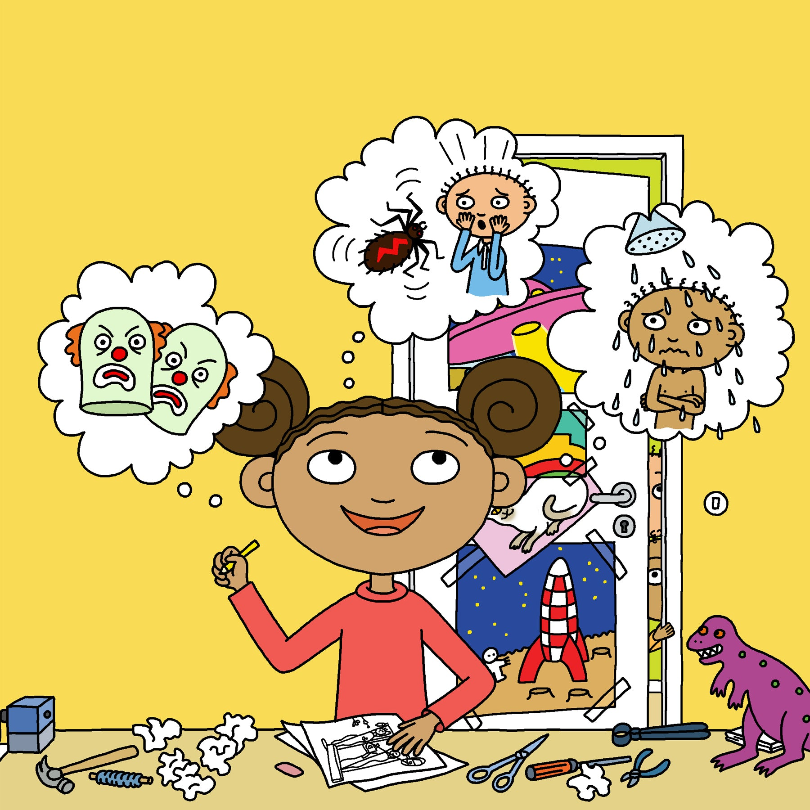

Upp och hoppa UppfinnarJohanna!
Ann-Christine Magnusson & Lovisa Lesse
Johannas småsyskon Sten och Stanley är så trötta att de kommer försent nästan varje dag till skolan! Här behövs en uppfinning. Johanna gör en ritning och plockar fram lite saker som kan behövas, en såg, brädor och en tuta. Upp och hoppa utan tjat, det fixar min väckningsapparat!
Till Butik >